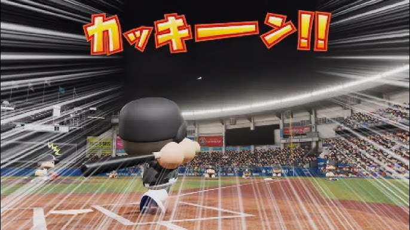

投球時間
10秒
7秒
5秒
10球チャレンジ開始
単語を編集
タイム
第
0
/10球
ホームラン
0
本
金＝ホームラン 緑＝ヒット 赤＝空振り/見逃し 青＝ボール
スペースキーでゲームスタート
スタート後、Enterキーで投球！
ミス:
0
残り:
--
秒
※試作版：IMEはOFF（半角英数）がおすすめ
タイム
投球時間を選び直せます
10秒
7秒
5秒
現在：
10秒
再開する
×
✦
単語の設定
すべての文字に、ローマ字入力のもとになる「ふりがな」を設定してください。
改行した一覧を貼り付けると、1行ずつ下の欄へ展開されます。最大100個まで登録できます。
表示する文字
ふりがな
0
/ 100
＋ 1行追加
初期単語に戻す
キャンセル
保存する

ホームランチャレンジ 結果
0
本
もう一度チャレンジ